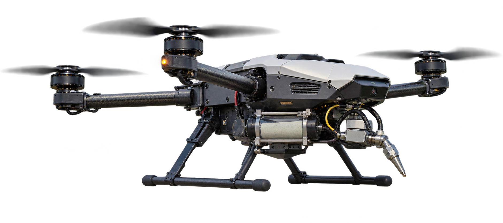

No tubo e no bico
Com mais cisalhamento, a viscosidade aparente cai e a mistura flui mais facilmente. É o comportamento pseudoplástico.

APRESENTAÇÃO FINAL · 2026

na recuperação de estruturas de transporte
Requisitos reológicos, aderência e viabilidade tecnológica
01 / PERGUNTA
O material precisa atravessar o sistema, aderir ao concreto e permanecer estável depois da deposição.
Quais propriedades permitem projetar uma argamassa especial por drone em pontes, viadutos e túneis?
02 / EVIDÊNCIAS
Texto completo ou conteúdo suficiente para extração detalhada.
Metadados e resumo, usados como evidência complementar.
Revisão crítica estruturada
03 / RESULTADO PRINCIPAL
Elas testam reologia, deposição, espessura e aderência sem atribuir função estrutural antes da validação.
04 / MATERIAL
A mesma mistura precisa fluir pelo bico e recuperar consistência no tabuleiro.
Com mais cisalhamento, a viscosidade aparente cai e a mistura flui mais facilmente. É o comportamento pseudoplástico.
Após a projeção, a mistura volta a ganhar consistência e resiste ao escorrimento. É a recuperação tixotrópica.
05 / CONTROLE DA PROJEÇÃO
01 / 06
O drone se aproxima e mede a folga entre o bico e a face inferior da ponte.
Medindo a folga
06 / ACEITAÇÃO
Autorização de voo
Espaço aéreo, área de operação, equipe e análise de risco.
Aceitação do reparo
Continuidade, espessura, cura, aderência e acabamento da camada.
Protocolo de aceitação H0–H8 proposto no artigo
07 / PERSPECTIVAS
Ensaiar um revestimento delgado em painéis verticais e de intradorso.
Com o desempenho validado, demonstrar em um elemento representativo.
A recomposição do cobrimento e o reparo estrutural ainda exigem novas evidências.